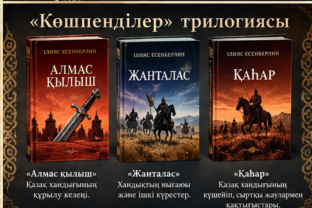

1-ТАПСЫРМА · 3 ҰПАЙ
«Тарихи кезеңді тап»
Үш романды олардың негізгі тарихи мазмұнымен сәйкестендіріңдер.
Әр дұрыс сәйкестік — 1 ұпай.
2-ТАПСЫРМА · 4 ҰПАЙ
«Тарихи дерек пен көркем бейне»
«Көшпенділер» трилогиясынан өздерің білетін бір оқиғаны таңдап, тарихи мәлімет пен жазушының көркемдік баяндауын салыстырыңдар. Тарихи фактіні оқулықпен тексеріңдер.
| Тарихи мәлімет (дереккөзге сүйеніп) | Көркем бейнелеу (романдағы көрініс) |
|---|---|
Мұғалім бағалайды: екі нақты салыстыру — 2 ұпай, дәлел — 1 ұпай, қорытынды — 1 ұпай.
3-ТАПСЫРМА · 3 ҰПАЙ
«Постерді қорға»
Топпен бір постер дайындап, 3 минут ішінде қорғаңдар. Тақырып: «Ілияс Есенберлин шығармалары неге маңызды?»

Қорғау критерийлері
- Тақырыптың ашылуы — 1 ұпай
- Нақты дәлелдер — 1 ұпай
- Топтың таныстыруы және сұраққа жауабы — 1 ұпай
Топ жұмысы мұғалімнің бағалауына ұсынылады.
Мұғалімге арналған бағалау
1-тапсырма автоматты тексеріледі. 2 және 3-тапсырмалар мұғалімнің бағалауымен есептеледі.
Жалпы: 0 / 10
Нәтиже осы браузерде сақталады.